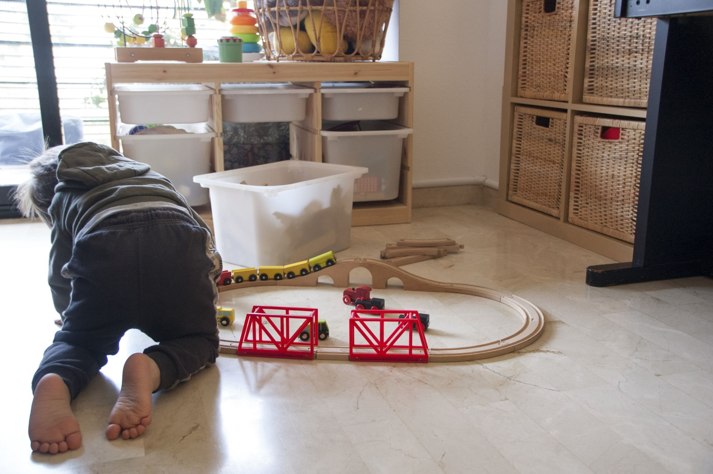

Principis metodològics i pedagògics
Una de les característiques del projecte d’una Mare de dia, és que centra la seva mirada pedagògica en una educació i atenció que prioritza a la persona.
És a través del concepte d’alternatives pedagògiques que es defineix una metodologia basada en el concepte d’infant competent i adult observador i disponible, on es posa a disposició de les famílies una altra manera d’entendre l’infant i les seves necessitats.
L’anomenen alternativa perquè, fins ara, són minoritàries al nostre país enfront de les tradicionals, i a més, la major part, són privades.
Les pedagogies alternatives es basen en diferents referents. Alguns d'aquests referents són: María Montessori, Rebeca Wild, Rudolf Steiner i la seva pedagogia Waldorf, les escoles democràtiques i referents com Emmi Pikler o Reggio Emilia (sobretot pel que fa iniciatives d’atenció a la primera infància).
Cap d’aquestes opcions es basa en termes com l’obediència, la competitivitat o l’aprenentatge condicionant (valoracions quantitatives i mètodes conductistes per a la correcció del comportament).
Tot i les seves diferències, aquests referents pedagògics tenen aspectes comuns:
Un infant necessita moure’s per tal de viure l’experiència en el seu propi cos, que entrarà en ell a través dels sentits i que li produirà una emoció com a resposta al contacte exterior (ambient) i que finalment encaixarà de forma gradual en un procés cognitiu.
Un infant, en essència aprèn. Només necessita un ambient protegit, bonic, segur i un model positiu i de confiança.
Aquest projecte es basa principalment en tres corrents pedagògiques: la de María Montessori, Rudolf Steiner i la seva pedagogia Waldorf, i la d'Emmi Pikler, ja que considero que els seus principis pedagògics són com una mena de sinergia la qual encaixa amb els fonaments que considero més importants, com son la defensa del desenvolupament integral del nen mitjançant l’exploració, el desenvolupament de la creativitat, l’amor i la llibertat.
MONTESSORI
Fundadora:
Maria Montessori, mestra i pedagoga italiana (1870-1952).
Defensa el foment de la motivació del nen per aprendre coneixements del seu interès.
Principis bàsics:
- La mestra té un paper no intervencionista en l'activitat de l'aula. L'alumne és un participant actiu en el procés d’ensenyament i aprenentatge.
- L'ambient i el mètode Montessori encoratgen l'autodisciplina interna.
- L'ensenyament individualitzat i en grup s'adapta a cada estil d'aprenentatge segons l'alumne.
- Grups amb diferents edats.
- Els nens són motivats a ensenyar, col·laborar i ajudar-se mútuament.
- L'aprenentatge és reforçat internament a través de la repetició d'una activitat i internament el nen rep el sentiment de l'èxit.
- Material multi sensorial per a l'exploració física.
- Programa organitzat per aprenentatge de la cura propi i de l'ambient (netejar, cosir, fregar, etc.).
WALDORF
Fundador:
Rudolf Steiner, filosof austríac (1861-1925)
Principis bàsics:
- Pren la mirada antroposòfica de l'home i desenvolupa una estructura de respecte pels cicles de la vida, les seves intencions, les seves característiques. Waldorf aprofundeix en les relacions i vincles humans, donant-li la importància que es mereixen, i transforma l'educació tradicional en una estructura viva.
- L’educació ha de respectar i donar suport al desenvolupament fisiològic, psíquic i espiritual del nen. Per aconseguir un bon desenvolupament intel · lectual ha d'existir una base emocional sòlida.
- Els nens han de ser nens, això implica que han d’aprendre jugant, amb el moviment, l’acció i l’experiència pròpia.
- Desenvolupa una metodologia que proposa que cada individu pugui trobar la seva essència a través de l’art, la creativitat i el moviment.
EmmiPikler
Fundadora:
Emmi Pikler, pediatra hongaresa(1902-1984) - Institut Lóczy de Budapest
Principis bàsics:
- Defensa la no intervenció de l’adult en el seu desenvolupament psicomotriu.
- Valor de l’autonomia, a través del desenvolupament lliure de la motricitat, joc i activitat autònoma.
- Valor de la relació afectiva privilegiada, a través de l’atenció a les necessita bàsiques fisiològiques.
- Valor de la estabilitat i continuïtat de l’atenció a l’infant, a través de l’educadora referent.
- Fer conscient l’infant de sí mateix i del seu entorn, a través del respecte i promoció de la iniciativa de la seva iniciativa en la vida quotidiana.
